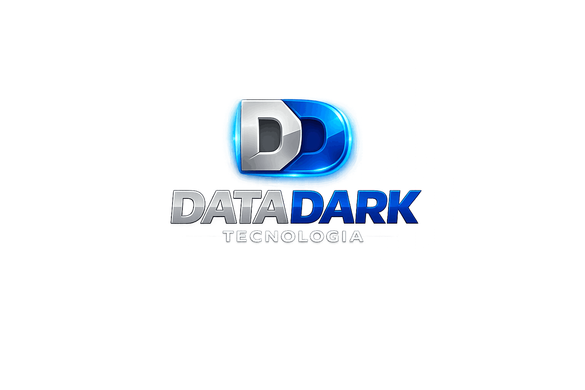

Suporte Técnico Especializado
Atendimento rápido e eficiente para diagnóstico, correção de falhas e resolução de problemas em computadores, notebooks e equipamentos de TI.

Destaque para alguns dos serviços prestados pela DATADARK Tecnologia
Atendimento rápido e eficiente para diagnóstico, correção de falhas e resolução de problemas em computadores, notebooks e equipamentos de TI.
Evite paradas inesperadas através de revisões periódicas, limpeza, otimização e monitoramento dos equipamentos.
Implantação, configuração e administração de servidores Linux e Windows para serviços corporativos, compartilhamentos, aplicações e segurança.
Implementação de boas práticas de segurança, proteção contra malware, ransomware, invasões e vazamento de dados.
Proteção dos seus dados com rotinas de backup automatizadas e estratégias de recuperação em caso de falhas ou perdas.
Atendimento especializado para pequenas e médias empresas, garantindo continuidade operacional e suporte ao ambiente de TI.
Assistência técnica para usuários domésticos, incluindo computadores, notebooks, impressoras, Wi-Fi e dispositivos conectados.
Atendimento rápido sem necessidade de deslocamento, permitindo solucionar diversos problemas de forma segura e eficiente.
Orientação para aquisição de equipamentos, melhorias de infraestrutura, segurança e planejamento tecnológico.
Infraestrutura, segurança e suporte integrados para ambientes de TI confiáveis, produtivos e preparados para crescer.
Infraestrutura em nuvem segura e escalável.
Ambientes robustos e de alta disponibilidade.
Proteção de dados e redes corporativas.
Conectividade estável e de alta performance.
Mais eficiência e flexibilidade para o TI.
Produtividade e colaboração para sua equipe.
Cópias automáticas e recuperação confiável.
Acompanhamento 24/7 para máxima performance.
Atendimento especializado e suporte contínuo.
Estratégia, processos e tecnologia para resultados eficientes.
Tecnologia deve simplificar o trabalho, proteger informações e manter sua operação disponível.
A DATADARK Tecnologia oferece suporte técnico e soluções de infraestrutura para empresas e residências, com atendimento objetivo, diagnóstico cuidadoso e foco na resolução eficiente de cada necessidade.
Nosso compromisso é cuidar do ambiente de TI de forma prática e confiável, para que nossos clientes possam concentrar tempo e energia no que realmente importa.
Atendemos empresas e residências com suporte técnico objetivo, presencial na região de Porto Alegre e remoto para todo o Brasil.
Porto Alegre e cidades da Região Metropolitana.
Suporte técnico para clientes em qualquer cidade do país.
Acesse o Portal DATADARK para abrir chamados, acompanhar atendimentos e consultar seu histórico de suporte com mais organização, praticidade e segurança.
Preencha os dados abaixo. Sua mensagem será enviada diretamente para a DATADARK Tecnologia.